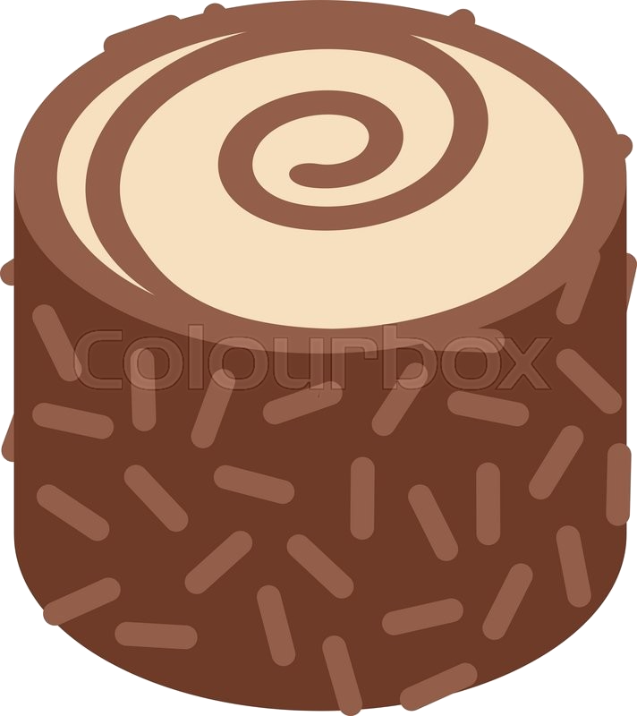
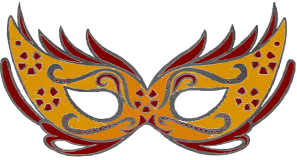
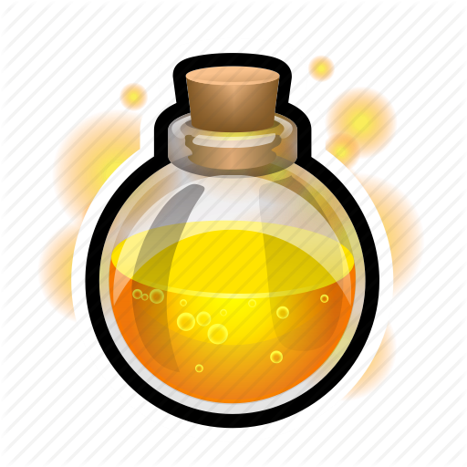
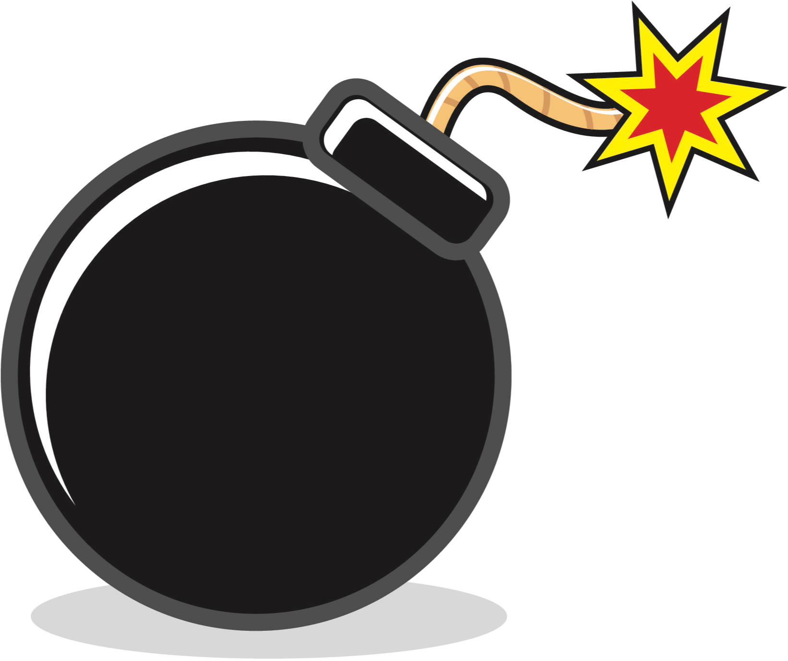
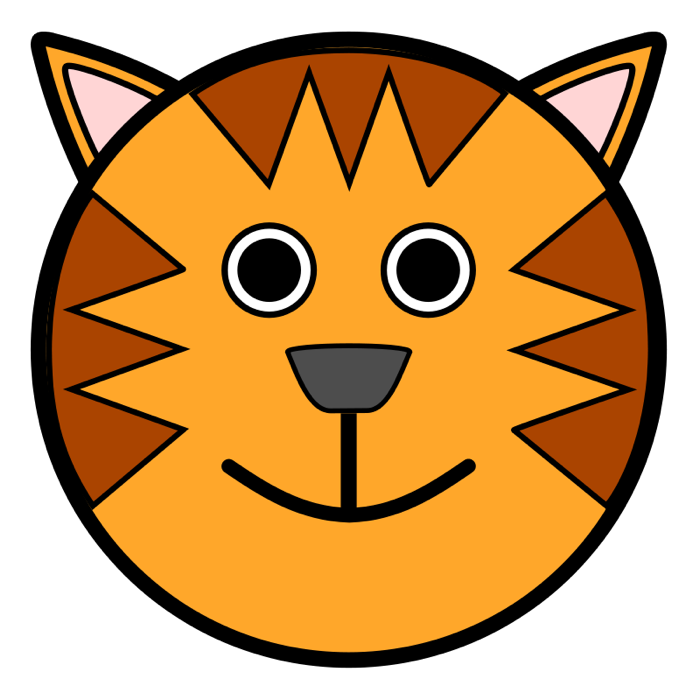
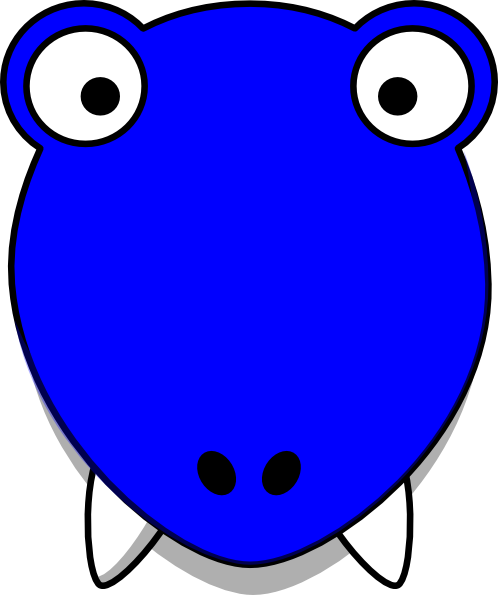
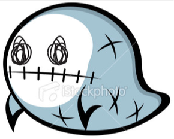
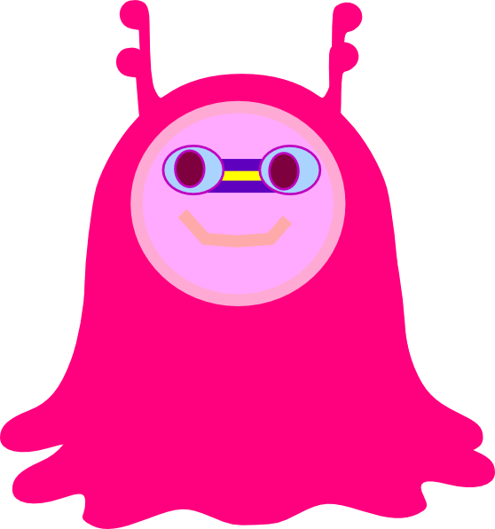
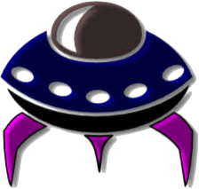

Dodge all enemies to survive. Enemies appear from left and right. Powerups will be stationary. Use arrow keys to move. Click start once ready.
| Powerups | Effects | Tips |
|---|---|---|
|  | Cakes are the most common powerup you will see. They give you bonus points when picked up! Each cake you collect grants you 200 points! | Although some bonus points is tempting, losing one health for 200 points is generally a bad idea. |
| Healthpacks keep you alive! Each Healthpack you collect grants you +1 health. | Healthpacks are crucial to your success! Pay attention to where they are and try to get them, especially in earlier levels. There is no maximum health you can have so stack up as much as you can! | |
|  | Eye mask are less common but very useful to get you out of sticky situations! Once collected, you transform into a wandering ghost that will not take damage from any enemies for 7 seconds! | Eyemasks are great as it gives 7 seconds of guaranteed survival. But dont waste them unnecessarily, save them for the right time! Careful when calculating the time it lasts, you dont want to collide into an enemy as soon as you transform back! |
|  | Potions are very powerful and essential! Although they dont come often, but when they do you will most probably need it! Once collected, transforms you to a burning fire that kills all enemies in your path. Lasts 5 seconds. | Potion are powerful but only lasts for 5 seconds. Use them only when there are enemies that you must kill. Enemies killed by you when you are in fire mode grants you bonus points! |
|  | Bombs are the most powerful powerups you will see! Once collected they will explode and kill a large area of enemies. Explosion effect lasts 3 seconds. | Bombs are very rare and often appear only in difficult levels. Do not just use it when you see one, save it for important enemies! Enemies killed by bombs grants you bonus points! |
| Enemies | Effects | Tips |
|---|---|---|
|  | Tigers are the slowest and the most basic among all the enemies. You lose one health on collision. | Try not to take damage by tigers as you will need the health later on. Not a priority for destroying(via bombs or potions etc). |
|  | Dinos are slightly faster and larger than tigers. You lose one health on collision. | Dinos are not menacing by itself but can be very dangerous in groups. Try to anticipate its movement as they move in a straight line. |
|  | Ghosts are one of the fastest enemies around. Although not that large in size, they can surprise you with their speed. You lose one health on collision. | Ghosts move very quickly so it is best to look out for them around the map to hide efficiently from them. |
|  | Pink aliens are one of the most irritating enemies around. They will lock on to you position and move towards you. The only saving grace is that they are comparatively slow. You lose one health on collision. | Pink alien follow you wherever you go, so try not to stay in corners or stay too long on the same spot. You can lure them to the side so that they would not be too much of a nuisance. |
|  | Alien spaceships are your nightmares! Not only are they fast, they are very large too! You lose 2 health on collision. | Alien spaceships are very hard to avoid due to their speed and size. Save some powerups for them! |